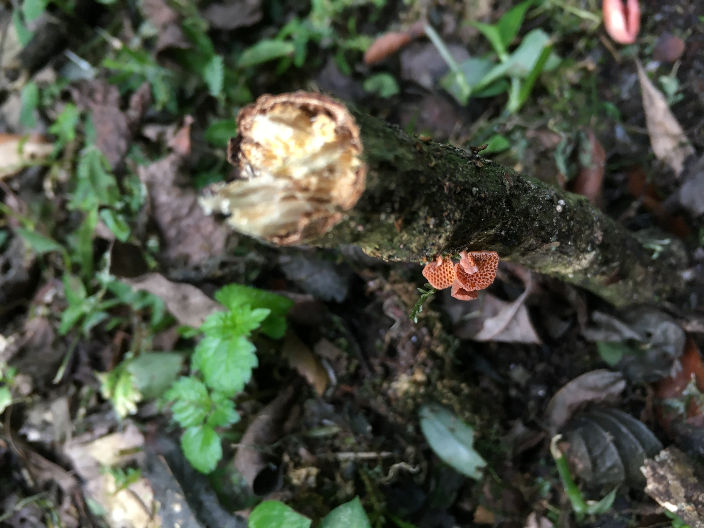

菌事 Fungal Stories
物種介紹
真菌學家
線上資源
隱身山林的異鄉客
橘黃膠孔菌
隱身山林的異鄉客—橘黃膠孔菌
臣亮言：先帝創業未半，而中道崩殂。今天下三分，益州疲弊，此誠危急存亡之秋也。然侍衛之臣，不懈於內；忠志之士，忘身於外者，蓋追先帝之殊遇，欲報之於陛下也。誠宜開張聖聽，以光先帝遺德，恢弘志士之氣；不宜妄自菲薄，引喻失義，以塞忠諫之路也。宮中府中，俱為體，陟罰臧否，不宜異同。若有作姦犯科，及為忠善者，宜付有司，論其刑賞，以昭陛下平明之治，不宜篇私，使內外異法也。侍中、侍郎郭攸之、費褘、董允等，此皆良實，志慮忠純，是以先帝簡拔以遺陛下。愚以為宮中之事，事無大小，悉以咨之，然後施行，必能裨補闕漏，有所廣益。將軍向寵，性行淑均，曉暢軍事，試用於昔日，先帝稱之曰「能」，是以眾議舉寵為督。愚以為營中之事，悉以咨之，必能使行陣和睦，優劣得所。親賢臣，遠小人，此先漢所以興隆也；親小人，遠賢臣，此後漢所以傾頹也。先帝在時，每與臣論此事，未嘗不歎息痛恨於桓、靈也。侍中、尚書、長史；參軍，此悉貞良死節之臣也，願陛下親之信之，則漢室之隆，可計日而待也。
臣本布衣，躬耕於南陽，苟全性命於亂世，不求聞達於諸侯。先帝不以臣卑鄙，猥自枉屈，三顧臣於草廬之中，諮臣以當世之事，由是感激，遂許先帝以驅馳。後值傾覆，受任於敗軍之際，奉命於危難之間，爾來二十有一年矣！先帝知臣謹慎，故臨崩寄臣以大事也。受命以來，夙夜憂勤，恐託付不效，以傷先帝之明。故五月渡瀘，深入不毛。今南方已定，兵甲已足，當獎率三軍，北定中原，庶竭駑鈍，攘除奸凶，興復漢室，還於舊都；此臣所以報先帝而忠陛下之職分也。至於斟酌損益，進盡忠言，則攸之、褘、允之任也。願陛下託臣以討賊興復之效；不效，則治臣之罪，以告先帝之靈。若無興德之言，則戮允等，以彰其慢。陛下亦宜自課，以諮諏善道，察納雅言，深追先帝遺詔，臣不勝受恩感激。今當遠離，臨表涕零，不知所云。

另一張橘黃膠孔菌的照片